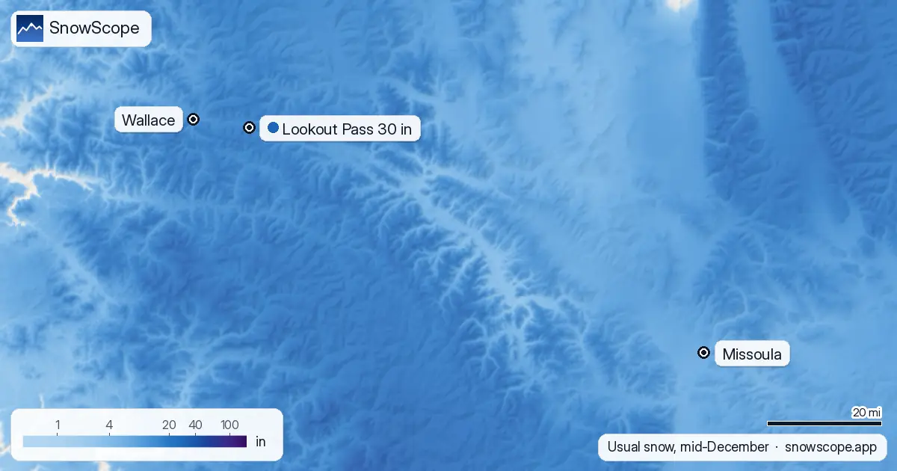

Lookout Pass in December: a $63 ski day right off I-90
Lookout Pass sits right at the Idaho-Montana line on I-90, with a midweek adult ticket at $63 when you book ahead. The upper slopes build reliable snow by December, but the base stays thin until after Christmas.
See the live snow forecast for Lookout Pass in the SnowScope appSnow depth, powder alerts and the 3D map, free.
Quick facts: location, terrain, ticket price
Lookout Pass is a small hill you can exit I-90 to reach, sitting between Wallace, Idaho and the Missoula area. The mapped terrain runs from 4,510 ft (1,374 m) to 6,150 ft (1,875 m)—a 501 m (1,644 ft) vertical—with 5 lifts and roughly 23 mi (37 km) of runs.
For the 2026-27 season, reserve your midweek ticket ahead at $63 (or $66 at the window). Weekends jump to $75 reserved, $78 at the window. The holiday period costs $79 or $82. No surprises: straightforward pricing rewards a bit of planning.

Where the snow is in December
Early December is tight at the base: a typical 1 December sees 11 in (29 cm), and only 20% of winters reach 20 in (50 cm) by that date. Mid-mountain (5,330 ft / 1,624 m) is kinder—50% of winters have 20 in (50 cm) or more—but the top (6,150 ft / 1,875 m) is best, with 65% of winters solid on that date.
By 15 December the story shifts. Mid-mountain typically holds 30 in (75 cm), with 85% of winters above 20 in (50 cm). The top averages 37 in (95 cm), and 96% of winters stay above that threshold. The base still lags at 18 in (45 cm), though 39% of winters meet the 20 in (50 cm) mark.
Christmas Day sees the base catch up to 23 in (59 cm) in 61% of winters. Mid-mountain reaches 38 in (97 cm) with 93% reliability, and the top stands at 48 in (122 cm) with 96% of winters above 20 in (50 cm). By New Year's Eve, mid-mountain sits at 45 in (114 cm), nearly certain to be skipable.

What changed in recent decades
In the first 15 winters on record (1980-81 to 1994-95), mid-mountain on 15 December averaged 33 in (84 cm) and every single winter exceeded 20 in (50 cm). In the last 15 winters (2011-12 to 2025-26), the typical value dipped to 26 in (66 cm), with 73% of winters crossing that threshold.
Last winter was notably sparse: mid-mountain had only 13 in (34 cm) on 15 December, though by Christmas it climbed to 22 in (56 cm). Such early-December leanness is part of the pattern now, even if the mid-to-late month usually fills in.
How it compares: Schweitzer and Snowbowl
Schweitzer Mountain, above Sandpoint, has bigger terrain and deeper top-of-mountain snow: on 15 December it typically shows 54 in (138 cm) at the summit versus Lookout's 37 in (95 cm). But Schweitzer's mid-mountain (5,200 ft / 1,585 m) averages 35 in (90 cm) on that date—only 5 in (12 cm) more than Lookout. A Schweitzer 3-Pack costs $249, or $83 per day.
Montana Snowbowl near Missoula charges $78 on weekdays and $85 on weekends. Its mid-mountain (6,260 ft / 1,909 m) on 15 December typically holds 30 in (76 cm)—the same as Lookout's mid-mountain. Lookout's weekday ticket at $63 makes it the cheaper option by $15 per day, with equivalent mid-mountain snow.
When to go and what to expect
Early December is a gamble: good snow (defined as a weekly average of 20 in / 50 cm or more) appears in only 30% to 37% of winters in the first two weeks. By late December—from the 14th onward—that share jumps to 52% to 65%, meaning the second half of the month is far more likely to deliver.
Upper lifts are your safety net before Christmas. The base can be thin, with exposed grass or thin cover hiding rocks. After Christmas, as the base builds, you gain more options. Wallace, the small mining town below the pass, has budget motels and diners if you want to stay close to the lifts.
Tips for skiers
- Book a midweek date ahead to lock in the $63 ticket; weekends and holidays cost much more.
- Ski the upper lifts in early December. The top of the mountain sits at 37 in (95 cm) on 15 December in a typical winter, while the base may be bare. Plan your runs higher.
- If you go between 14-27 December, good snow appears in 52-65% of winters at mid-mountain. The second half of the month is far more reliable than the first half.
- Check the I-90 pass report before you drive. Chain requirements appear in storms; the pass sits at 4,680 ft (1,427 m) and closes occasionally in winter.
- The last 15 winters have been leaner than the first 15 on the SnowScope record: plan for snow but verify conditions in real time before you book.
About these numbers
Resort snow depths are the deepest snow on the resort's upper slopes on the date shown; they are estimates for an area, not a measurement at one point. Forecasts can change. Always read the official avalanche bulletin before going off-piste.
Official avalanche bulletins: avalanche.org (US national portal)
Cite this report
For research, teaching or the press: the numbers and charts are free to reuse under CC BY 4.0 with this citation.
SnowScope (2026), Lookout Pass in December: a $63 ski day right off I-90, https://snowscope.app/blog/en/2026/11/lookout-pass-december-skiing-63-dollar-midweek.html, accessed 2026-11-14
SnowScope (Atlas Labs). (2026, November 14). Lookout Pass in December: a $63 ski day right off I-90. SnowScope snow reports. https://snowscope.app/blog/en/2026/11/lookout-pass-december-skiing-63-dollar-midweek.html
BibTeX
@misc{snowscope2026lookoutpassdecemberskiin,
author = {{SnowScope (Atlas Labs)}},
title = {Lookout Pass in December: a $63 ski day right off I-90},
year = {2026},
month = nov,
howpublished = {\url{https://snowscope.app/blog/en/2026/11/lookout-pass-december-skiing-63-dollar-midweek.html}},
note = {Published 2026-11-15 09:34 UTC; accessed 2026-11-14}
}· CC BY 4.0 · Methods, data and tools →
Lookout Pass: snow and temperature by height, this winter vs last (tools) →
Follow Lookout Pass
Free: a message when fresh snow is coming, and the forecast every morning.
More snow reports

Seasonal outlook for the Rockies: warmer December ahead, near-normal snow, but north leans leaner while Colorado and Utah remain undecided. Data from 10 November 2026.

A storm on November 4 left 8 to 13 inches of new snow at five high Colorado stations near Aspen. Five days later, half of it was gone. What that means for powder days.

Mt. Shasta Ski Park's upper slopes hold 20 cm (2026-11-13), but the base is bare with rain below 2020 m. Next: 32 cm forecast.